GOD OF WAR
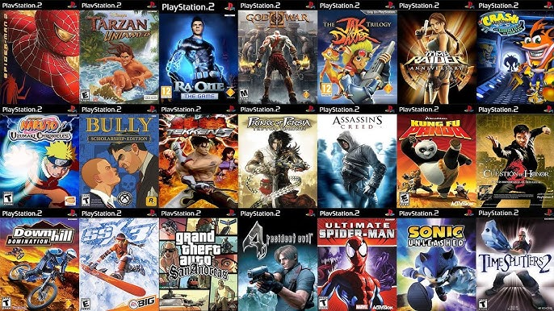
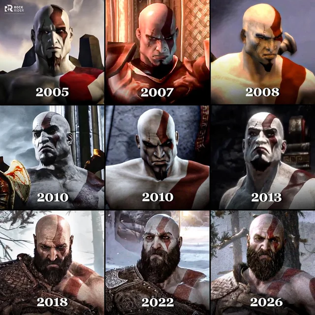
Una aventura de acción protagonizada por Kratos, ambientada en la mitología griega.
Género: Acción y aventura
⭐⭐⭐⭐⭐
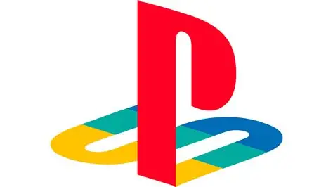
Los juegos que marcaron una generación
Cualquier día era bueno para disfrutar con estos señores. Pasaban las horas sin darte cuenta y tu mamá te regañaba porque no hacías las tareas.


Una aventura de acción protagonizada por Kratos, ambientada en la mitología griega.
Género: Acción y aventura
⭐⭐⭐⭐⭐
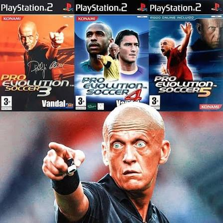
Uno de los videojuegos de fútbol más recordados de la época de PlayStation II.
Género: Deporte
⭐⭐⭐⭐⭐
La PlayStation II contó con una gran variedad de videojuegos para diferentes gustos y edades, destacándose por sus juegos de acción, deportes, lucha, terror y mundo abierto.
Juego de acción y aventura protagonizado por Kratos, quien se enfrenta a diferentes enemigos y criaturas de la mitología griega.
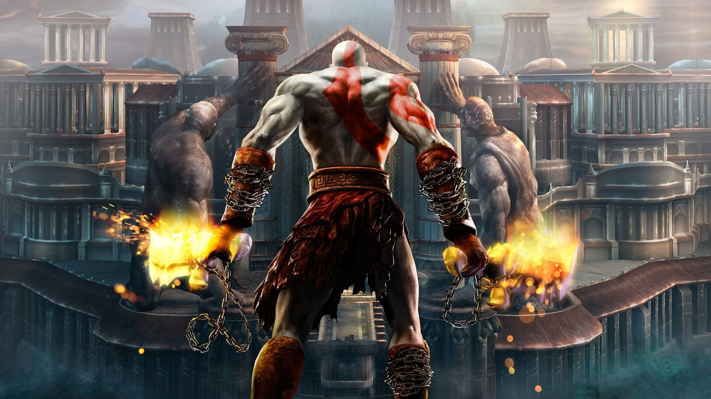
Juego de fútbol que permite disputar partidos, torneos y diferentes competiciones con equipos y jugadores de todo el mundo.
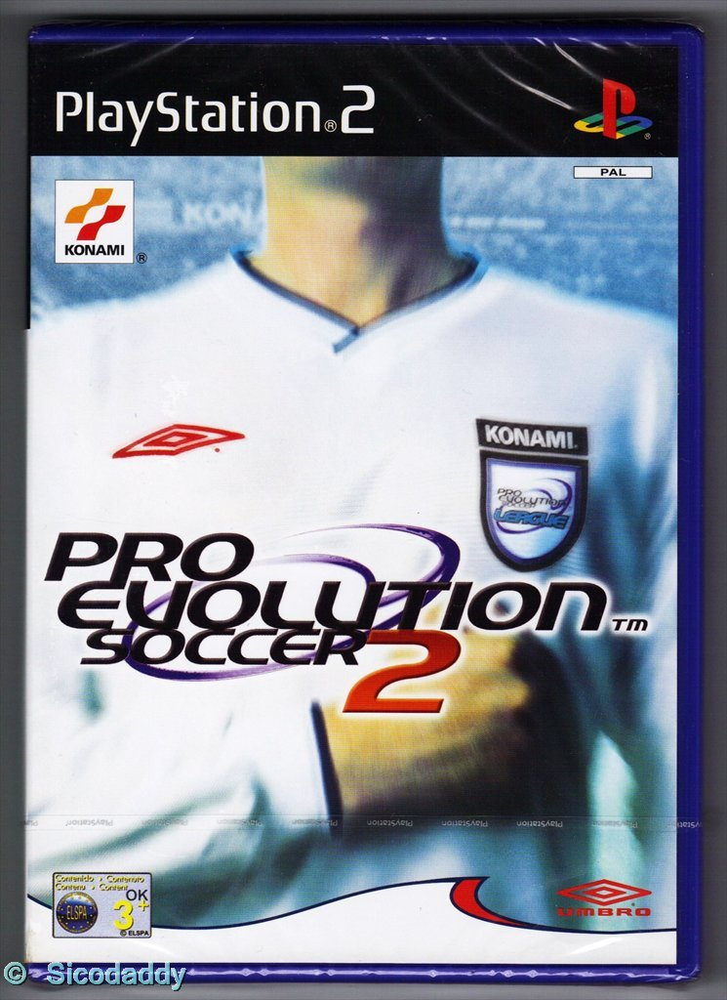
Juego de lucha en el que los personajes pueden transformarse en diferentes animales durante los combates.
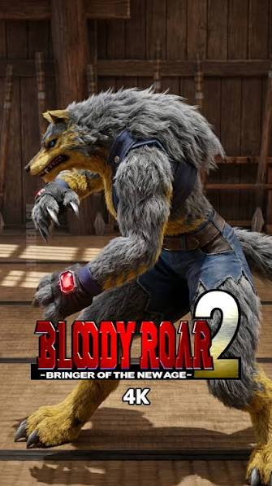
Juego de terror y supervivencia en el que el jugador debe enfrentarse a diferentes enemigos mientras explora lugares peligrosos.
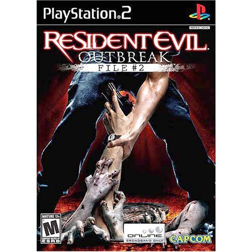
Juego de mundo abierto en el que el jugador puede explorar diferentes ciudades, realizar misiones y participar en diversas actividades.
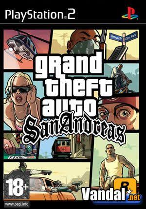
Los juegos de acción de PlayStation II se caracterizan por sus combates, aventuras, exploración y diferentes misiones que debe completar el jugador.
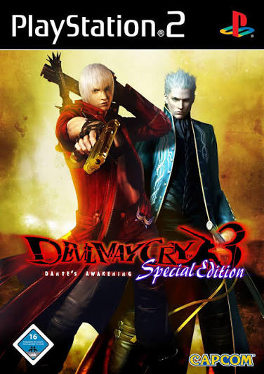
Juego de acción protagonizado por Dante, quien debe enfrentarse a numerosos enemigos utilizando diferentes armas y habilidades.
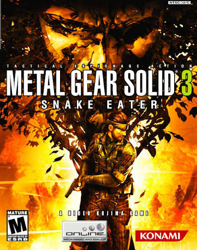
Juego de acción y sigilo en el que Snake debe infiltrarse en diferentes lugares y completar peligrosas misiones.
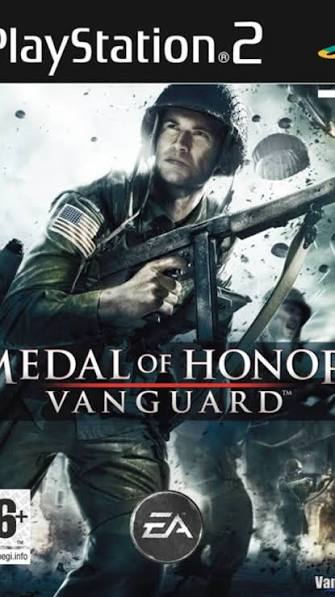
Juego de acción y supervivencia en el que soldados se enfrentan entre si para llevar a la victoria a su nación.
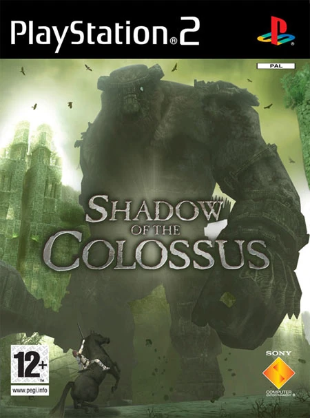
Aventura de acción en la que el jugador debe explorar un extenso mundo y derrotar enormes criaturas conocidas como colosos.
Los juegos de deportes de PlayStation II permiten disfrutar de diferentes disciplinas deportivas y competir en distintos torneos y partidos.
Juego de fútbol que permite disputar partidos, torneos y competiciones con diferentes equipos.

Juego de baloncesto que combina partidos callejeros con diferentes trucos y movimientos especiales.

Juego de skate en el que el jugador puede realizar diferentes trucos y recorrer distintos escenarios.
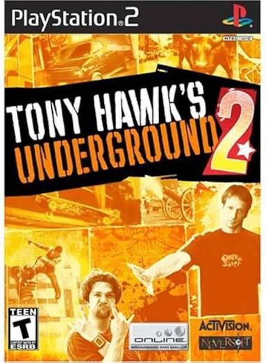
Los juegos de peleas se caracterizan por los combates entre diferentes personajes, cada uno con sus propios movimientos y habilidades.
Juego de lucha en el que diferentes personajes se enfrentan utilizando combos y movimientos especiales.

Juego de lucha con diferentes personajes, escenarios y modos de juego.
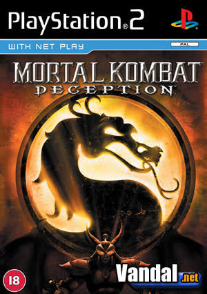
Juego de lucha basado en Dragon Ball Z, donde los personajes utilizan ataques y transformaciones especiales.

Los juegos de terror buscan crear tensión y suspenso mediante ambientes oscuros, criaturas y situaciones peligrosas.
Juego de terror psicológico en el que James Sunderland llega al misterioso pueblo de Silent Hill.

Juego de terror en el que las protagonistas exploran lugares misteriosos y utilizan una cámara especial para enfrentarse a los fantasmas.

Juego de terror y supervivencia en el que Fiona debe escapar de un misterioso castillo mientras intenta sobrevivir a sus perseguidores.

Juego de suspenso y supervivencia en el que Regina debe explorar una instalación llena de dinosaurios mientras busca una forma de escapar y descubrir qué ocurrió.

Una colección de imágenes de algunos videojuegos clásicos y populares que nos dejaron grandes recuerdos.
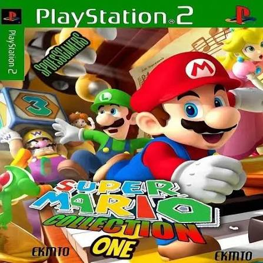
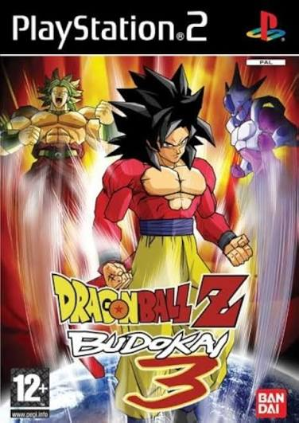
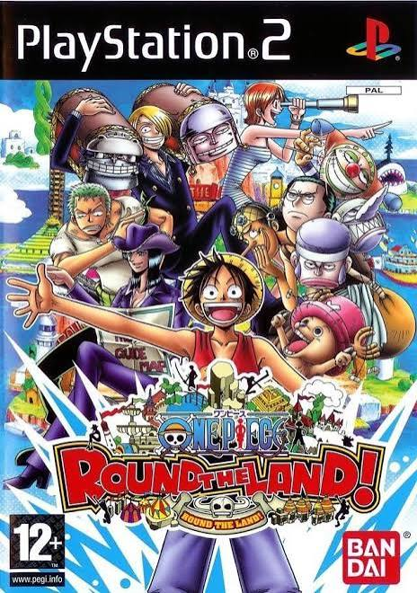
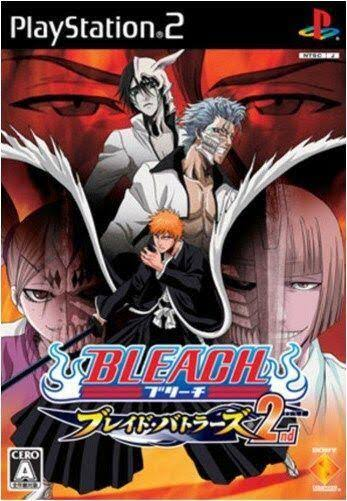

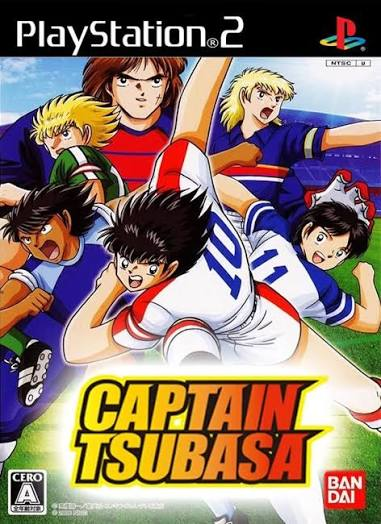